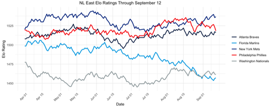

Coming into the 2007 season, the Mets hoped to expand on their success from the previous year, which ended in a Game 7 loss to the Cardinals in the NLCS. A combination of aging starting pitchers Tom Glavine, Orlando Hernández, and Pedro Martinez, injuries to Duane Sánchez and Juan Padilla, the questionable trade of Heath Bell to the Padres left fans wondering if their young pitchers Óliver Pérez and John Maine were sustainable. However, these fears seemed to be put to rest early in the season, coming out of the gate strong.
Sitting at 34-18, the Mets had the best record in the National League at the end of May, trailing by more than 1 game only once on April 11. Despite a slide in June and early July, they still led a weak National League East by 2 games at the All-Star Break. A 35-23 stretch immediately following the break put the Mets 7 games up on the second-place Phillies on September 12. With 13 of their final 17 games against the 4th place Nationals and 5th place Marlins, surely the Mets were a lock as the NL East champions for a second consecutive year.
But then, the wheels started coming off. A three-game sweep at home at the hands of the Phillies cut their lead to 3.5 games with 14 remaining. After losing two games to the Nationals, the Mets followed up with 4 wins in their next 5 games, all on the road. Taking a 2.5 game lead over the Phillies into the final week of the season, the Mets appeared poised to hang on. After all, they were finishing with a 7-game homestand: 3 games against the Nationals, a make-up game against the Cardinals, and a 3-game set against the Marlins.
Despite the seemingly easy slate, the Mets lost the first 5 games of the homestand while the Phillies won 3 of 4, putting the Mets in second place for the first time since May 15. The following day, a 13-0 blowout win coupled with a Phillies loss put the teams tied atop the division at 87-73 with one game left. A win over the Marlins would force a tiebreaker at worst and secure the division title at best. The next day, 41-year-old Tom Glavine would surrender 7 first inning runs, leading to an 8-1 loss. 80 miles away, the Phillies would defeat the Nationals 6-1, completing the comeback and snatching the division title from the Mets.
So how bad was the Mets’ collapse? We simulated the remainder of the 2007 season after the conclusion of each day of play 10,000 times. Going into the beginning of the season, the Mets and Phillies were effectively equal in strength with the Mets holding a slight 2-point lead in Elo rating and both winning the division in about one-third of all simulations.
| Team | Preseason Elo | Simulated Record | Division Champion |
|---|---|---|---|
| New York Mets | 1520 | 86-76 | 33.58% |
| Philadelphia Phillies | 1519 | 86-76 | 34.44% |
| Atlanta Braves | 1508 | 83-79 | 18.08% |
| Florida Marlins | 1499 | 81-81 | 11.46% |
| Washington Nationals | 1477 | 75-87 | 2.44% |
While the Phillies would eventually win the division, the Braves were the Mets’ bigger competitor early in the season. Alternating between first and second place with the Braves through mid-May, the Mets appeared to be the strongest team in the NL East. By the time they took sole control of the division on May 16, the Mets were 12-4 in games decided by at least 5 runs, while the Braves were 4-4 in the same type of games in that span. This combination allows the Mets to push their Elo rating as many as 17 points higher than the Braves. Meanwhile, the Phillies’ position in the standings after 40 games was not representative of their play. Despite being 20-20 and 5.5 games out of first place, they had improved their Elo rating to 1523 by going 6-3 in blowouts but only 2-5 in one-run games.

At the end of May, the Mets were the second-best team in baseball both in terms of record (34-18) and Elo rating (1543), trailing only the eventual World Series champion Boston Red Sox (36-16, 1544). Cracks emerged in June and July, enduring a 14-19 stretch into the All-Star game, but they still led the second-place Braves by 2 games. Lurking 4.5 games behind, the Phillies were deceptively strong. With two brief exceptions, they passed the Braves for good for the second highest Elo rating in the division on June 5 (1515) and would climb ahead of the Mets for the first time on July 27 with a rating of 1527 to the Mets’ 1521.
In future articles, we’ll explore how specific types of teams tend to over- or under-perform simulations.